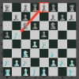
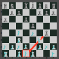
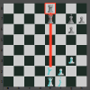
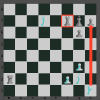
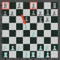
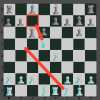

Chess Tactics
Tactics support the player’s strategy while destroying the opponent’s strategy. In general, tactics are maneuvers that take advantage of short-term opportunities. A simple tactic is enough to win the game if you are able to maintain your advantage throughout the game. Some tactics are made up of combinations and patterns so you need to train to be able to execute these tactics.
Pins
When you attack an opponent’s piece and he cannot move without losing a different piece with greater value. The pin is the most common tactic that is used in chess. Take note every piece is vulnerable to a pin but only a Queen, Rook, and Bishop can do the pin.
Absolute pin
A pinned piece direclty to the king. It prevents the pinned piece from moving. In other words absolute pin indirectly attacks the opponent’s King.
Relative pin
In contrast to absolute pin here you can move the piece but it may result to a greater loss in material than the pinned piece.
Skewer
It is like a pin but in reverse, the attacker’s objective is to threaten a valuable piece and force it to move and capture the piece behind it.
Deflection
In the deflection, you are forcing a move to remove the defender of an opponent’s piece. Here you can exploit an overworked piece. This tactic is a little complicated because it is usually a combination of moves.
Forks
These are tactical maneuvers in which a piece or pawn attacks two opponent pieces at the same time. A common misconception in forks is many think that only a Knight can fork pieces actually, all pieces can create a fork including the King.
Decoy
So far it is the most satisfying tactic in chess. The idea of the decoy is to force a piece to move in a square to execute your attack. Decoy is usually a piece of sacrifice but in return, it will be converted to your advantage. In the example below first we want to move the Bishop and attack the queen. Queen is forced to capture the Bishop. In the next move we will fork the King and Queen and win material.
